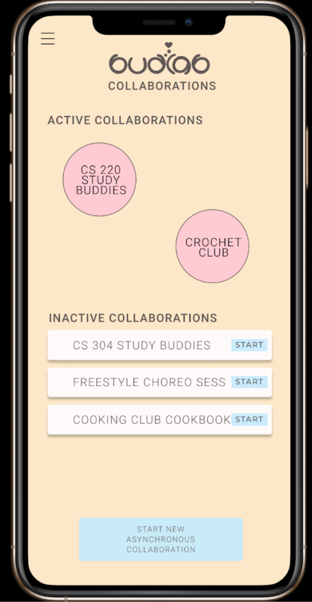
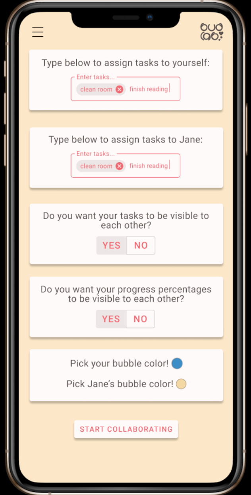
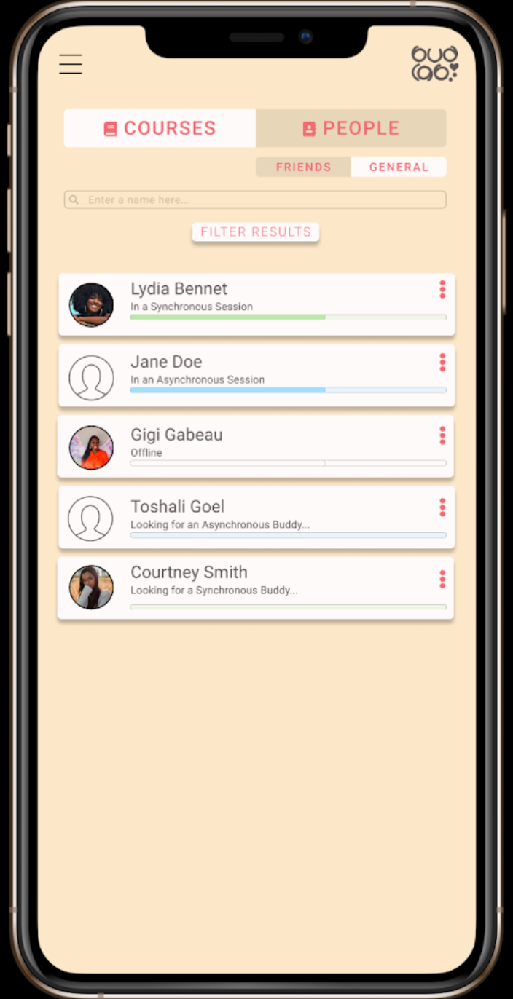
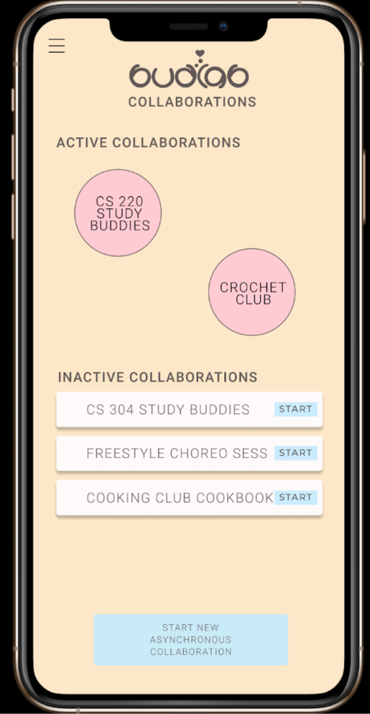
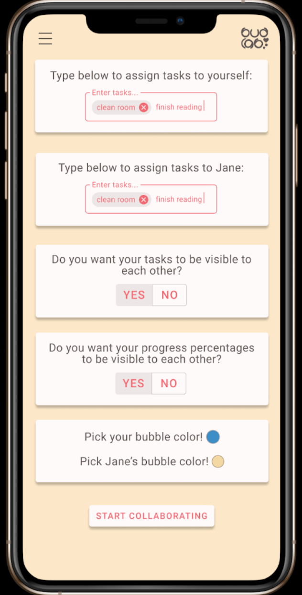
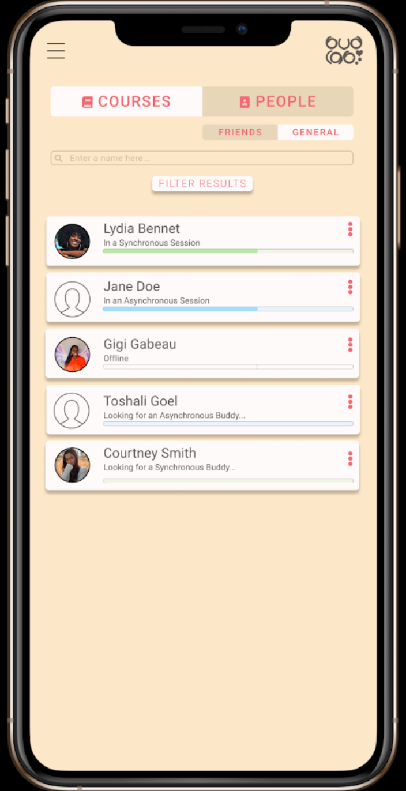

Budlab
Application Design for Student Productivity
We interviewed communities impacted by COVID-19, which helped us discover our user need: dwindling student productivity in the face of pandemic WFH. We designed an application that would allow students to work with their peers either synchronously or asynchronously, tracking their progress and finding study buddies even in the remote learning environment.

I took a Human-Computer Interaction class the summer before my junior year, in which our task was to design an application that would help people affected by the pandemic and the sudden switch to virtual/remote life. I worked with a partner to create Budlab, an application design that attempts to help college students studying remotely during the pandemic to boost academic drive by connecting and collaborating with peers and classmates in the format best suited to them - whether that be synchronous, asynchronous, or a less involved form of teamwork.
After conducting several user research interviews amongst our target population, we discovered that college students felt burnt out and unmotivated, both in their social and academic lives. We decided to try and come up with a solution to this all too common problem, and put together an app that would allow people to form meaningful connections and work together - even in the remote environment.
User Analysis
Above are two empathy maps summarizing the findings from 2 user interviews I conducted. Some of our key takeaways from this stage of the project were:
- Interviewees have difficulty maintaining academic drive, as they are unable to see peers working and feel motivated
- Interviewees have difficulty maintaining long-term connections with remotely-made friends, as they often lose touch once the semester/school period ends.
- Interviewees struggled with procrastination as they had more time to do less work.
Personas


Based on the information we collected from our user interviews, we created two distinct personas to guide our design process. (Of the two, I was responsible for the Courtney persona.)
Ideation

Above is the preliminary, low-fidelity app design that I came up with. I focused on the academic improvements our application could make, rather than the social ones that were also pointed out in our user research. I also explicitly focused on asynchronous collaboration, as most of my interviewees seemed to favor the flexibility it provided.
I came up with the idea to use bubbles to visualize progress on assignments - each student in the collaboration group would have a uniquely colored bubble, the size of which would correspond to their progress percentage. The entire group would be represented by a group percentage bubble, the average of all collaborators' progress and the median color of all participants. In a built-out, functional prototype, all bubbles would float and the bubbles with higher percentages would float above others to further signify their meaning and purpose.
User Feedback Wireframe
We analyzed the strengths and weaknesses of this design:
Strengths
- Built out asynchronous collaboration
- Good for students who are focused on academic motivation
Weaknesses
- No in-app features for synchronous collaboration, relies on assumption that students have other means for that
- Not as focused on socialization
Based on user feedback as well as our own critiques, we decided to move further with a design that would also allow for synchronous collaboration, and would have options for social engagement and interaction.
To the right is a wireframe prototype of our next design iteration, which included both synchronous and asynchronous collaboration. It also added several "directories" to allow students to meet and work with students across the entire platform rather than just those they shared classes our academic interests with. I also added a feature to allow users to see the activity and progress of their friends on the app, which would hopefully help students who felt like they wanted to be around other working students but were uncomfortable reaching out/initiating a connection remotely.
Alpha Prototype
 





From left to right: Asynchronous collaboration setup screen; Dashboard screen; Asynchronous collaboration setup screen part two; Friends Directory.
User Feedback and Prototype Iterations
Above are some of the key screens from the alpha prototype we created in Figma, taking user feedback on our wireframe from peers into account. Some of the biggest changes we made to our application design in this stage were: combining the general and friends directory under a common "people" directory, splitting the asynchronous collaboration setup page into 2 different screens to avoid overwhelming the user, and a color scheme and consistent font style. We chose colors that seemed calming and soft to keep from distracting students, but also fun and energizing to increase student motivation. We also chose a universally accessible and easy to read font, Roboto, to use throughout the app.
Final Beta Prototype
To the left is the final, high-fidelity Figma prototype that we created. I was primarily responsible for the design of all the directories, the asynchronous screens, and the messaging screens. After receiving user feedback on the initially confusing nature of the app's navigation, this final prorotype contains a consistent header that allows the user to reach the expanded side menu from any screen they reach, as well as to go back to their previous screen. This proved highly helpful in allowing users to recover swiftly from any errors they made while using the app, and helped to streamline our app's internal navigation.